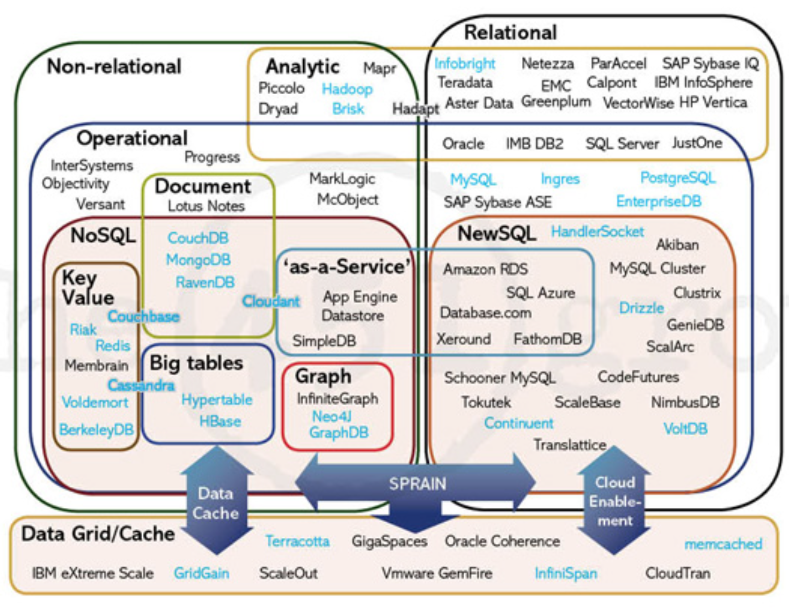

一、什么是数据库？
一般一个数据库系统（Database System）可分为两个部分：
- 数据库（Database）
- 数据管理系统（Database Management System，DBMS）
A Database is an organized collection of data. —— Wikipedia数据库 就是 有组织的数据集合 ，存储在一个或多个磁盘文件中，俗称
「数据的仓库」。广义上来讲，只要能储存数据的都能算数据库（如txt文档、Excel表格等）。Database Management Systems (DBMS)数据管理系统 就是 操作和管理数据库的应用软件，用于建立、使用和维护数据库（持久化存储、优化读写、保证数据的有效性等）。
狭义上来讲，我们说的“数据库”，通常都是指「数据库管理系统 (DBMS)」。
二、为什么要用数据库？
1. 如果数据保存到内存里：
优点：读写非常快
缺点：程序关闭导致数据丢失
2. 如果数据保存到文件系统里：
优点：数据可以永久保存
缺点：1. 频繁地IO操作，效率不高；2. 数据管理不方便，如果查询某个数据需要全部读取出来，再匹配。
3. 如果数据保存到数据库里：
- 底层数据的持久化存储
- 保证了底层数据的一致性和稳定性
- 提供了接口对数据进行操作和检索
- 支持SQL语句，可用于复杂的查询
- 方便对数据的日常维护和管理
- 比普通文件系统更细粒度的控制和呈现
- 可以在程序里使用数据库的读写接口
- 提供了并发控制访问和数据容错机制
....
千言万语一句话：方便、效率、安全
三、地球上有哪些数据库？
数据库受欢迎程度排名：https://db-engines.com/en/ranking
数据库版图

1. 关系型数据库 (RDBMS)
Relational Database Management Systems (RDBMS)关系型数据库 (RDBMS) 是建立在关系模型基础上的数据库，借助于集合代数等数学概念和方法来处理数据库中的数据，是当前应用最广泛的数据库管理系统。
在关系型数据库中，主要有如下名词：
- 数据库：表的集合
- 数据表：数据的集合
- 数据行：一行数据就是一个对象
- 数据列：也称字段，表示对象的属性
一个关系型数据库就像一个Excel文件，文件中的sheet就像是表，sheet中每个列的逻辑定义就是表的字段，sheet中行就是表的数据行。
关系型数据库的代表产品：
| 数据库 | 简介 | 应用场景 |
|---|---|---|
| Oracle | 由于其诞生早、结构严谨、高可用、高性能、高安全等特点，使其在传统数据库应用中近乎垄断，金融、通信、能源、物流、零售、制造等各个传统行业的大型公司都在使用，甚至早期的世界500强企业几乎全部都是Oracle的用户。 | 主要在传统行业的数据化业务中，比如：通信、银行、金融这样的对可用性、健壮性、安全性、实时性要求极高的业务；或者零售、物流、能源这样对海量数据存储分析要求很高的业务。通常搭配Oracle大型服务器和磁盘阵列使用，售价非常昂贵。 |
| MySQL | Web时代使用最广泛的关系型数据库，MySQL的早期定位的主要应用场景就是互联网开发。可以说，是互联网的爆发成就了MySQL，LAMP架构风靡天下。而由于MySQL更多的的追求轻量、易用，在传统的数据库应用场景中，份额极少。 | 其应用实例也大都集中于互联网方向，MySQL的高并发存取能力并不比大型数据库差，同时价格便宜，安装使用简便快捷，深受广大互联网公司的喜爱。并且由于MySQL的开源特性，针对一些对数据库有特别要求的应用，可以通过修改代码来实现定向优化，比如淘宝网。 |
| Microsoft SQL Server | 是Microsoft公司在软件集成方案中的重要一环，由于只能在Windows上使用，流行程度不如前两者。一般配置ASP.Net开发，也为Windows系统在企业级应用中的普及做出了很大贡献。 | Microsoft SQL Server主要面向中小企业。其最大的优势就是在于集成了MS公司的各类产品及资源，提供了强大的可视化界面、高度集成的管理开发工具。也提供了整套的软件方案，基本上一套Windows系统装下来就齐活了。因此，不那么缺钱，但很缺IT人才的中小企业，会偏爱 Microsoft SQL Server 。 |
大数据时代到来，关系数据库的缺点：
- 处理数据格式单一：关系数据库所采用的二维表格数据模型不能有效地处理多维数据，不能有效处理互联网应用中半结构化和非结构化的海量数据，如Web页面、电子邮件、音频、视频等。
- 高并发读写性能低：Web2.0网站数据库并发负载非常高，往往要达到每秒上万次读写请求。关系型数据库勉强可以应付上万次SQL查询，但硬盘I/O往往无法承担上万次的SQL写数据请求。
可扩展性低：当一个应用系统的用户量和访问量与日俱增的时候，传统的关系型数据库却没有办法像Web服务器那样简单地通过添加更多的硬件和服务节点来扩展性能和负载能力。对于很多需要提供不间断服务的系统来说，对数据库系统进行升级和扩展往往需要停机维护和数据迁移。
根据这种情况，NoSQL技术应运而生。
2. 非关系型数据库 (NoSQL)
Originally referring to "non SQL", "non relational" or "not only SQL" (NoSQL)NoSQL 泛指的是非关系型的数据库。是对不同于传统的关系型数据库的数据库管理系统的统称。NoSQL数据库的产生就是为了解决大规模数据集合多重数据种类带来的挑战，尤其是大数据应用难题。
NoSQL相比关系数据库的主要优势：
- 低延迟的读写速度：应用快速地反应能极大地提升用户交互速度;
- 高性能和可扩展性：基于键值对，数据没有耦合性，容易进行分布式扩展；
- 非结构化和不可预知的数据：NoSQL的存储格式是Key-Value形式、文档形式、图片形式等等，而关系型数据库则只支持基础类型。
NoSQL 在近几年非常流行，分为四大类：
| 分类 | 代表数据库 | 应用场景 | 特点 |
|---|---|---|---|
| 键值型(Key-Value) | Redis、 Riak |
内容缓存，主要用于处理大量数据的密集IO型高访问负载。 | 键值数据库是形式最简单的NoSQL，数据中的每一个值（value）都有专门的键（key）与之匹配，能够实现针对相对简单数据集的超快应用性能，查找速度非常快。 |
| 文档型 (Document) | MongoDB、 CouchDB |
Web应用，收集和处理来自网页和移动应用的数据。 | 文档数据库以类似文档的结构存储数据，可以采用无模式的形式，数据结构要求不严格，表结构可变。 |
| 列存储 (Big tables) | HBase、 Cassandra |
通常应用于互联网搜索、其他大规模的网页应用和PB级数据的分析应用。 | 以列簇式存储，将同一列数据存在一起，在处理大数据集的时候，就可以具备更高的性能和扩展性（如HBase+Hadoop架构）。 |
| 图形 (Graph) | Neo4J、 GraphDB |
社交网络，推荐系统等，专注于构建关系图谱。 | 类似于图的结构存储数据，可以利用图结构相关算法，便于探索数据之间的联系。 |
- NoSQL的缺点：
- 不支持SQL语句：不提供SQL支持，学习和使用成本较高；
- 提供的功能有限：无事务处理，完整的解决方案和报表等支持不好；
- 稳定性：产品的完善程度和稳定性，不能和几十年的历史的关系型数据库相提并论。
3. SQL+NoSQL : NewSQL
NewSQL数据库是一种开源软件产品，相较于传统关系型数据库和NoSQL，它既能够使用SQL语句来查询数据，同时具备现代化，分布式，高容错，基于云的集群架构。
NewSQL 结合了RDBMS丰富灵活的数据互动能力以及稳定和管理机制，也能提供NoSQL针对大数据和快数据的实时扩展能力。
四、我们的学习目标
数据库技术非常多，涉及数据库的工作岗位有：
DBA(Database Admins)：熟悉数据库的操作，熟悉底层原理，保证数据库的安全及架构优化。
研发工程师：根据产品经理的设计策划，创建数据库、表，并在项目代码里熟练使用API与数据库交互。
我们的目标是成为Python研发工程师，并能够熟练的在生产环境里，使用Python与数据库进行数据交互。